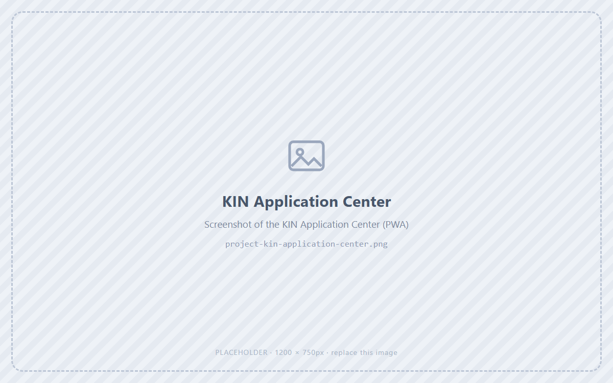

One place to start the working day
KIN Application Center is an enterprise Progressive Web App that brings internal applications, shared dashboards, news, notifications, and conversational AI into a common entry point. Employees use their company identity rather than maintaining a separate App Center user directory.
The home page combines a compact clock and greeting, recommended applications, and up to three accessible favorite dashboards. The complete application catalog remains available from All Apps. The aim is to make frequently used systems easy to reach while keeping the landing page focused.
Connecting services without blurring their responsibilities
The portal brings together systems with different responsibilities: company identity, application discovery, dashboard sharing, notification delivery, and application-specific data access. A convenient entry point must respect those boundaries rather than treat a visible shortcut as permission to use an application.
Integration also affects everyday usability. Embedded dashboards must scroll correctly, API requests must reach their backend rather than the PWA shell, and the home page must remain readable above the floating navigation on smaller screens.
Key features
- Personalized application discovery
Apps for You uses department, location, and direct employee mappings. Administrators can search the employee directory by ID or name and save assignments through Manage Apps. The full catalog has its own visibility setting.
- Dashboards in the employee workspace
Employees can open accessible dashboards in the standard viewer, fullscreen, or a new tab. The home page previews up to three accessible favorites and hides the section when none are selected. Favorites are saved in the current browser.
- Company identity and Kinboard onboarding
Password and SSO login share an onboarding path that can register eligible HRIS employees as Kinboard dashboard users. Registration requires an active employee and an active department mapping, preserves existing accounts, and does not grant editor or administrator roles. A registration failure is logged without blocking App Center login.
- A centralized AI assistant with an MCP gateway
Employees use chat inside App Center. The assistant connects through an MCP gateway to Metabase, Data Storage MCP, and MCP services exposed by individual applications, supporting workflows across those systems. Its access remains aligned with what the employee is permitted to do manually.
- News and notification integration
Dedicated views keep shared information and notifications close to the application catalog. Push activation connects to the notification service, with API routing separated from PWA navigation.
- Responsive PWA navigation
The desktop home layout is compact, while smaller screens use a three-column app grid, horizontally browsable dashboard favorites, and clearance above the floating navigation. Light and dark themes follow the device setting by default; a saved user choice takes priority.
From sign-in to the right application
The portal starts with who the employee is, then offers three complementary ways to work: open an application, explore a dashboard, or ask the assistant. The same entry point supports all three, while the connected systems retain their own responsibilities.
Discovery is separate from authorization. Mappings decide which apps are recommended. Application permissions and dashboard sharing decide what the employee can access.
- Resolve the company identity
The login flow supplies the employee identity used for recommendations and connected-service lookups. Case-insensitive employee-code matching avoids missing an existing Kinboard account because the login uses a different letter case.
- Build a focused starting page
The home page loads recommended apps and accessible favorites. It distinguishes loading, empty, and retry states rather than displaying an empty result while a request is still in progress.
- Open a service or dashboard
An employee launches an application or opens a shared dashboard. App mappings determine discovery; destination applications retain their authorization checks, and dashboard access still depends on an active Kinboard account and valid sharing.
- Use conversational access when useful
The employee asks the App Center assistant a question. The AI workflow uses the MCP gateway to reach the relevant connected services within the employee’s permissions. Employees do not need to configure their own MCP clients to use this chat experience.
My contribution
I developed the shared employee entry point and its integrations, including personalized app mappings, dashboard access, login-time Kinboard onboarding, and the centralized AI assistant with its MCP gateway. The work connects business-facing navigation with identity and application-specific service boundaries.
For employee mapping, I reused the employee identity supplied by authentication rather than creating another local user directory. The management screen uses the existing employee database for searchable selection and binds the name automatically. Department, location, and employee assignments are saved together, while omitted employee assignments are preserved for older callers.
I also improved the delivery and user experience: separating management into lazy-loaded routes, removing unused management screens, reusing mapping dropdown data, and refining home, dashboard, and news layouts across desktop and smaller viewports.
Technology & architecture
The application uses an Angular and TypeScript PWA frontend with Node.js/Express backend services and existing database integrations. It connects company authentication and Keycloak identity with HRIS employee information, the application catalog, Kinboard dashboards, and the notification service.
Shared access path, user-specific permissions. The employee uses chat rather than configuring an MCP client. Each step stays within the employee’s permitted capabilities; the diagram shows a logical workflow, not a mandatory call to every service.
Instead of making employees configure separate tool connections, App Center provides a shared conversational interface. The assistant can combine capabilities from reporting, database, and business applications through the gateway when the request needs them. A workflow can involve multiple services without giving the employee broader access than the underlying systems permit.
The design separates the conversation from the tools: the AI workflow interprets the request, the gateway connects MCP services, and the application capabilities remain behind their access boundaries. Results return to the assistant so the employee can continue in the same conversation.
The PWA and reverse proxy also have separate responsibilities. API paths must bypass service-worker navigation handling and route to the correct backend. A notification API response must not be replaced by the Angular app shell.
Outcomes & engineering lessons
App Center provides a shared starting point for applications, dashboards, information, and AI-assisted workflows. Employee mappings make recommendations more specific without duplicating the company user directory, while Kinboard onboarding reduces a separate account-registration step for eligible employees.
Several implementation decisions addressed concrete failure modes. Native iframe scrolling replaced document-height expansion and wheel interception so dashboard footers and nested tables remain reachable. Management route splitting reduced unrelated modules loaded for administrative screens. Kinboard registration errors are isolated from sign-in so a downstream service does not prevent employees entering the portal.
The central lesson is to keep convenience and access control separate: a unified interface should make connected services easier to use while preserving their identity, authorization, and data boundaries.